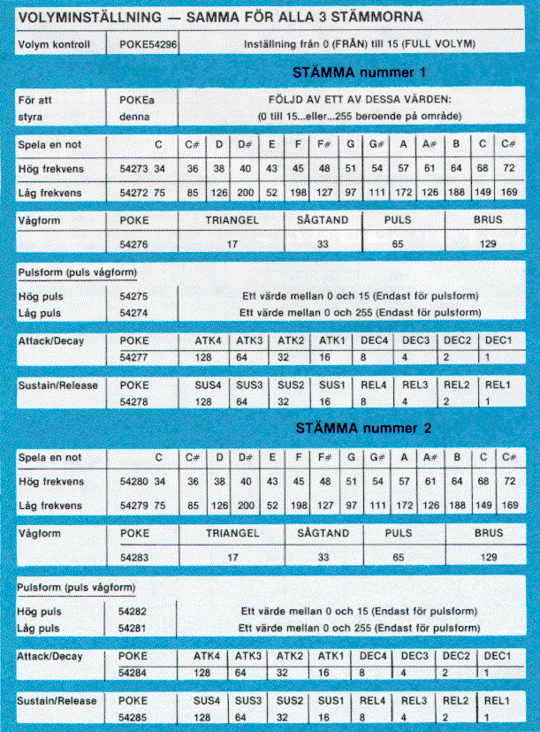
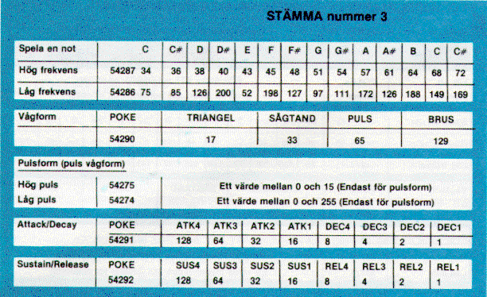

Om du har ett program skrivet i en annan BASIC-dialekt än Commodore BASIC, kan en del mindre justeringar erfordras innan det kan köras på Commodore 64. Vi har tagit med en del tips hur man gör denna ändring.
Avlägsna alla uttryck som används för att deklarera längden på strängar. Ett uttryck som DIM A$(I, J), som dimensionerar en sträng J anta, element av längden I, ska ändras till Commodore BASIC uttrycket DIM A$(J).
En del BASIC-dialekter använder ett komma eller & för att sammanfoga strängar.
Vid Commodore BASIC används MID$-, RIGHT$- och LEFT$-funktionerna för att ta ut delar av strängar. Uttryck såsom A$(I) för att ta ut I:te tecknet i strängen A$, eller A$(I,J) för att ta ut en delsträng från tecknet I till J, måste andras enligt följande:
| ANNAN BASIC | COMMODORE 64 BASIC |
|---|---|
| A$(I) = X$ | A$ = LEFT$(A$, I-1) + X$ + MID$(A$, I+1) |
| A$(I,J) = X$ | A$ = LEFT$(A$, I-1) + X$ + MID$(A$, J+1) |
För att sätta B och C till 0, används vissa uttryck med formen:
10 LET B=C=0
Commodore 64 kommer att tolka det sista likhetstecknet som en logisk operand och sätta C = -1 om C = 0. Ändra istället detta uttryck till:
10 C=0:B=0
En del BASIC-dialekter använder snedstreck för att separera flera instruktioner på samma rad. Vid Commodore BASIC separeras instruktionerna med kolon (:).
Program som använder MAT funktionen som finns i vissa BASIC-dialekter måste skrivas om och använda FOR...NEXT-loopar för att arbeta riktigt.
Denna bilaga innehåller en komplett lista på felmeddelanden som ges av 64, med en beskrivning av orsaken.
Denna bilaga innehåller en komplett lista på NOT#(nummer), notbeteckningar och de värden som ska POKEas in i "ljudchipet's" HÖG- och LÅG-frekvensregister för att skapa önskad ton
| NOT# | NOT-OKTAV | HÖG FREKVENS | LÅG FREKVENS |
|---|---|---|---|
| 0 | C-0 | 1 | 18 |
| 1 | C#-0 | 1 | 35 |
| 2 | D-0 | 1 | 52 |
| 3 | D#-0 | 1 | 70 |
| 4 | E-0 | 1 | 90 |
| 5 | F-0 | 1 | 110 |
| 6 | F#-0 | 1 | 132 |
| 7 | G-0 | 1 | 155 |
| 8 | G#-0 | 1 | 179 |
| 9 | A-0 | 1 | 205 |
| 10 | A#-0 | 1 | 233 |
| 11 | B-0 | 2 | 6 |
| 12 | C-1 | 2 | 37 |
| 13 | C#-1 | 2 | 69 |
| 14 | D-1 | 2 | 104 |
| 15 | D#-1 | 2 | 140 |
| 16 | E-1 | 2 | 179 |
| 17 | F-1 | 2 | 220 |
| 18 | F#-1 | 3 | 8 |
| 19 | G-1 | 3 | 54 |
| 20 | G#-1 | 3 | 103 |
| 21 | A-1 | 3 | 155 |
| 22 | A#-1 | 3 | 210 |
| 23 | B-1 | 4 | 12 |
| 24 | C-2 | 4 | 73 |
| 25 | C#-2 | 4 | 139 |
| 26 | D-2 | 4 | 208 |
| 27 | D#-2 | 5 | 25 |
| 28 | E-2 | 5 | 103 |
| 29 | F-2 | 5 | 185 |
| 30 | F#-2 | 6 | 16 |
| 31 | G-2 | 6 | 108 |
| 32 | G#-2 | 6 | 206 |
| 33 | A-2 | 7 | 53 |
| 34 | A#-2 | 7 | 163 |
| 35 | B-2 | 8 | 23 |
| 36 | C-3 | 8 | 147 |
| 37 | C#-3 | 9 | 21 |
| 38 | D-3 | 9 | 159 |
| 39 | D#-3 | 10 | 60 |
| 40 | E-3 | 10 | 205 |
| 41 | F-3 | 11 | 114 |
| 42 | F#-3 | 12 | 32 |
| 43 | G-3 | 12 | 216 |
| 44 | G#-3 | 13 | 156 |
| 45 | A-3 | 14 | 107 |
| 46 | A#-3 | 15 | 70 |
| 47 | B-3 | 16 | 47 |
| 48 | C-4 | 17 | 37 |
| 49 | C#-4 | 18 | 42 |
| 50 | D-4 | 19 | 63 |
| 51 | D#-4 | 20 | 100 |
| 52 | E-4 | 21 | 154 |
| 53 | F-4 | 22 | 227 |
| 54 | F#-4 | 24 | 63 |
| 55 | G-4 | 25 | 177 |
| 56 | G#-4 | 27 | 56 |
| 57 | A-4 | 28 | 214 |
| 58 | A#-4 | 30 | 141 |
| 59 | B-4 | 32 | 94 |
| 60 | C-5 | 34 | 75 |
| 61 | C#-5 | 36 | 85 |
| 62 | D-5 | 38 | 126 |
| 63 | D#-5 | 40 | 200 |
| 64 | E-5 | 43 | 52 |
| 65 | F-5 | 45 | 198 |
| 66 | F#-5 | 48 | 127 |
| 67 | G-5 | 51 | 97 |
| 68 | G#-5 | 54 | 111 |
| 69 | A-5 | 57 | 172 |
| 70 | A#-5 | 61 | 126 |
| 71 | B-5 | 64 | 188 |
| 72 | C-6 | 68 | 149 |
| 73 | C#-6 | 72 | 169 |
| 74 | D-6 | 76 | 252 |
| 75 | D#-6 | 81 | 161 |
| 76 | E-6 | 86 | 105 |
| 77 | F-6 | 91 | 140 |
| 78 | F#-6 | 96 | 254 |
| 79 | G-6 | 102 | 194 |
| 80 | G#-6 | 108 | 223 |
| 81 | A-6 | 115 | 88 |
| 82 | A#-6 | 122 | 52 |
| 83 | B-6 | 129 | 120 |
| 84 | C-7 | 137 | 43 |
| 85 | C#-7 | 145 | 83 |
| 86 | D-7 | 153 | 247 |
| 87 | D#-7 | 163 | 31 |
| 88 | E-7 | 172 | 210 |
| 89 | F-7 | 183 | 25 |
| 90 | F#-7 | 193 | 252 |
| 91 | G-7 | 205 | 133 |
| 92 | G#-7 | 217 | 189 |
| 93 | A-7 | 230 | 176 |
| 94 | A#-7 | 244 | 103 |
| Adress | Innehåll |
|---|---|
| 54293 | Undre gränsfrekvens (0-7) |
| 54294 | Övre gränsfrekvens (0-255) |
| 54295 | Resonans (bit 4-7) |
| Filter stämma 3 (bit 2) | |
| Filter stämma 2 (bit 1) | |
| Filter stämma 1 (bit 0) | |
| 54296 | Högpass (bit 6) |
| Bandpass (bit 5) | |
| Lågpass (bit 4) | |
| Volym (bit 0-3) |
| handic | Programmeringshandbok, 3 delar |
| Förlagsgruppen | BASIC på C 64 |
| Förlagsgruppen | Grafik och ljud på C 64 |
| Förlagsgruppen | System - 64 |
| Förlagsgruppen | Grafisk konst |
| Förlagsgruppen | Avancerad programmering |
| Förlagsgruppen | Matematik på C 64 |
| Förlagsgruppen | Comal på C-64, lärobok för nybörjare |
| Register# | ||||||||||
|---|---|---|---|---|---|---|---|---|---|---|
| Dec | Hex | DB7 | DB6 | DB5 | DB4 | DB3 | DB2 | DB1 | DB0 | |
| 0 | 0 | S0X7 | S0X0 | SPRITE 0 X Komponent | ||||||
| 1 | 1 | S0Y7 | S0Y0 | SPRITE 0 Y Komponent | ||||||
| 2 | 2 | S1X7 | S1X0 | SPRITE 1 X | ||||||
| 3 | 3 | S1Y7 | S1Y0 | SPRITE 1 Y | ||||||
| 4 | 4 | S2X7 | S2X0 | SPRITE 2 X | ||||||
| 5 | 5 | S2Y7 | S2Y0 | SPRITE 2 Y | ||||||
| 6 | 6 | S3X7 | S3X0 | SPRITE 3 X | ||||||
| 7 | 7 | S3Y7 | S3Y0 | SPRITE 3 Y | ||||||
| 8 | 8 | S4X7 | S4X0 | SPRITE 4 X | ||||||
| 9 | 9 | S4Y7 | S4Y0 | SPRITE 4 Y | ||||||
| 10 | A | S5X7 | S5X0 | SPRITE 5 X | ||||||
| 11 | B | S5Y7 | S5Y0 | SPRITE 5 Y | ||||||
| 12 | C | S6X7 | S6X0 | SPRITE 6 X | ||||||
| 13 | D | S6Y7 | S6Y0 | SPRITE 6 Y | ||||||
| 14 | E | S7X7 | S7X0 | SPRITE 7 X Komponent | ||||||
| 15 | F | S7Y7 | S7Y0 | SPRITE 7 Y Komponent | ||||||
| 16 | 10 | S7X8 | S6X8 | S5X8 | S4X8 | S3X8 | S2X8 | S1X8 | S0X8 | MSB of X COORD. |
| 17 | 11 | RC8 | ECM | BMM | BLNK | RSEL | YSCL2 | YSCL1 | YSCL0 | Y SCROLL Mode |
| 18 | 12 | RC7 | RC6 | RC5 | RC4 | RC3 | RC2 | RC1 | RC0 | RASTER |
| 19 | 13 | LPX7 | LPX0 | Ljuspenna X | ||||||
| 20 | 14 | LPY7 | LPY0 | Ljuspenna Y | ||||||
| 21 | 15 | SE7 | SE0 | SPRITE ENABLE (ON/OFF) | ||||||
| 22 | 16 | N.C. | N.C. | RST | MCM | CSEL | XSCL2 | XSCL1 | XSCL0 | SCROLL/MODE |
| 23 | 17 | SEX7 | SEX0 | SPRITE EXPAND Y | ||||||
| 24 | 18 | VS13 | VS12 | VS11 | VS10 | CB13 | CB12 | CB11 | N.C. | SCREEN Char Memory |
| 25 | 19 | IRQ | N.C. | N.C. | N.C. | LPIRQ | ISSC | ISBC | RIRIQ | Interrupt Request's |
| 26 | 1A | N.C. | N.C. | N.C. | N.C. | MLPI | MISSC | MISBC | MRIRQ | Interrupt Request MASKS |
| 27 | 1B | BSP7 | BSP0 | Background Sprite PRIORITY | ||||||
| 28 | 1C | SCM7 | SCM0 | MULTICOLOR SPRITE SELECT | ||||||
| 29 | 1D | SEXX7 | SEXX0 | SPRITE EXPAND X | ||||||
| 30 | 1E | SSC7 | SSC0 | Sprite-Sprite COLLISION | ||||||
| 31 | 1F | SBC7 | SBC0 | Sprite-Background COLLISION | ||||||
| FÄRGKODER | |||||||||
|---|---|---|---|---|---|---|---|---|---|
| DEC | HEX | FÄRG | |||||||
| 32 | 20 | 0 | 0 | BLACK | EXT 1 | EXTERIOR COL | |||
| 33 | 21 | 1 | 1 | WHITE | BKGD0 | BACKGROUND 0 | |||
| 34 | 22 | 2 | 2 | RED | BKGD1 | BACKGROUND 1 | |||
| 35 | 23 | 3 | 3 | CYAN | BKGD2 | BACKGROUND 2 | |||
| 36 | 24 | 4 | 4 | PURPLE | BKGD3 | BACKGROUND 3 | |||
| 37 | 25 | 5 | 5 | GREEN | SMC 0 | SPRITE MULTICOLOR 0 | |||
| 38 | 26 | 6 | 6 | BLUE | SMC 1 | SPRITE MULTICOLOR 1 | |||
| 39 | 27 | 7 | 7 | YELLOW | S0COL | SPRITE 0 COL | |||
| 40 | 28 | 8 | 8 | ORANGE | S1COL | SPRITE 1 COL | |||
| 41 | 29 | 9 | 9 | BROWN | S2COL | SPRITE 2 COL | |||
| 42 | 2A | 10 | A | LT RED | S3COL | SPRITE 3 COL | |||
| 43 | 2B | 11 | B | GRAY 1 | S4COL | SPRITE 4 COL | |||
| 44 | 2C | 12 | C | GRAY 2 | S5COL | SPRITE 5 COL | |||
| 45 | 2D | 13 | D | LT GREEN | S6COL | SPRITE 6 COL | |||
| 46 | 2E | 14 | E | LT BLUE | S7COL | SPRITE 7 COL | |||
| 15 | F | GRAY 3 | |||||||
LEGEND: ONLY COLORS 0-7 MAY BE USED IN MULTICOLOR CHARACTER MODE.
Denna tabell ger dig de viktiga värdena du behöver använda i dina ljudprogram, beroende på vilka av Commodore 64s stämmor du vill använda. För att sätta eller ändra ljudkontrollvärde i ditt BASIC-program, behöver du endast POKEa en adress från tabellens andra kolumn följt av ett komma(,) och ett värde från tabellen...så här: POKE 54296,17 (välj triangelvåg åt stämma 1).
Kom ihåg att att du måste sätta på VOLYM innan du kan generera ljud. POKE 54296 följt av ett tal från 0 till 15 sätter gemensam volym för samtliga stämmor.
Det krävs 2 separata POKEs för att generera varje musikton. Exempelvis: POKE 54273,34: POKE 54272,75 skapar låga C enligt skalan på sidan 153.
Dessutom är du inte begränsad av de tal som står i tabellen. Om 34 inte låter "rent" för ett lågt C kan du prova 35. För att möjliggöra ett högre attack- eller sustain-förhållande än vad som visas, kan du addera två eller flera SUSTAINvärden tillsammans. Exempelvis: POKE 54277,96 kombinerar två attackförhållande (32 och 64) för att ge ett kombinerat högre värde.


| ADSR | -- Attack/Decay/Sustain/Release |
| Attack | -- Tiden till ljudet når sin högsta styrka |
| Decay | -- Tiden för ljudet att falla till sustainnivå |
| Sustain | -- Förlänga tonen på en speciell nivå |
| Release | -- Tiden för ljudet att avta från sustainnivå |
| Vågform | -- "Formen" på ett ljud |
| Puls | -- Tonkvalitet på pulsvågform |
OBS. Attack/Decay- och Sustain/Release-inställningarna ska alltid POKEas i programmet INNAN vågformen POKEas in.